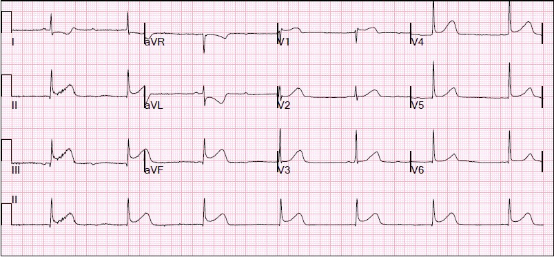
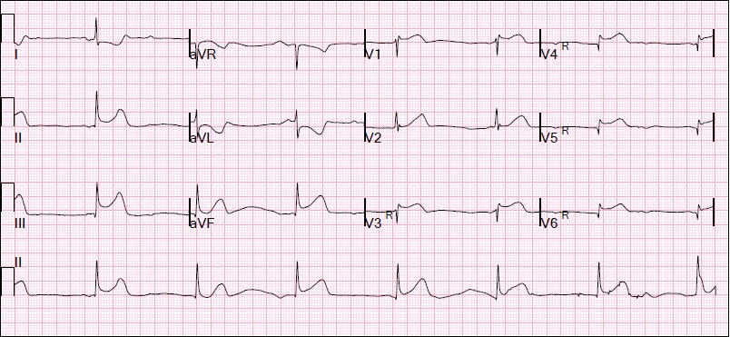
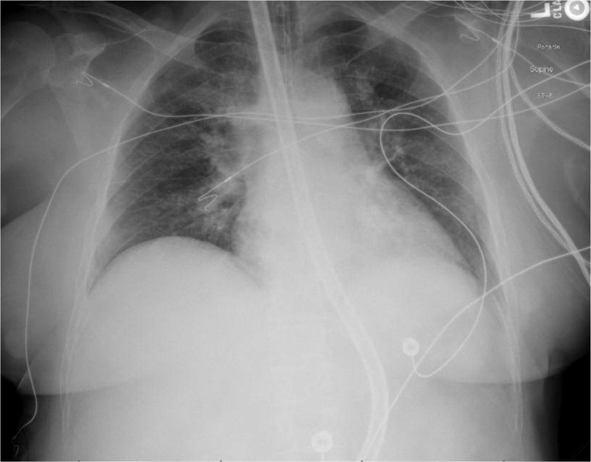
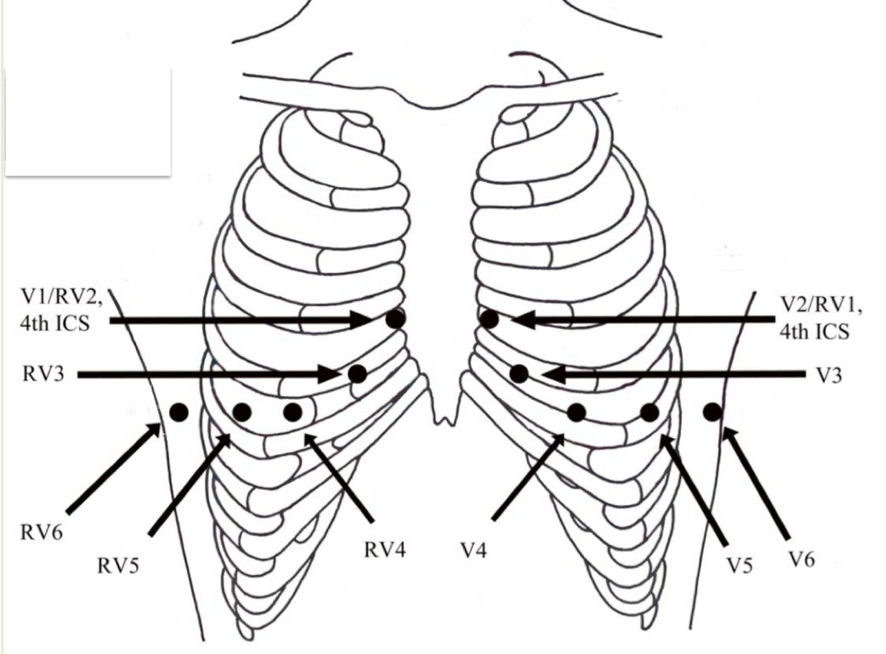

20/01/2016 — STEMI thành dưới kèm blốc AV, sốc tim và ST chênh lên ở V1
Bản dịch tiếng Việt của bài "Inferior STEMI with AV Block, Cardiogenic Shock and ST elevation in V1" – Dr. Smith’s ECG Blog. Giữ nguyên toàn bộ 4 hình ảnh và 1 video của bản gốc.
Đây là một ca tôi đã cùng làm với một trong những bác sĩ nội trú nội khoa/cấp cứu xuất sắc của chúng tôi, Marco Salmen, MD. Anh ấy đã viết ca này cho blog, với một chút giúp đỡ của tôi.
Xem thêm ca này: https://drsmithsecgblog.com/2011/01/rv-mi-diagnosed-by-st-elevation-in-v1.html (nhồi máu thất phải được chẩn đoán nhờ ST chênh lên ở V1)
Ca bệnh
Nếu bạn thích xem ca này được trình bày qua video, thì đây là phần trình bày của Marco Salmen:
https://hqmeded.com/stabilization-series-right-ventricular-mi/ (loạt bài ổn định bệnh nhân: nhồi máu thất phải)
Marco có vài sai sót khi nêu liều epinephrine. 5 mcg phải là 50 mcg, và 10 phải là 100.
Một phụ nữ lớn tuổi gọi 911 vì buồn nôn và đau ngực khởi phát cấp tính, kéo dài
30 phút. Điện tâm đồ trước viện giống hệt điện tâm đồ đầu tiên này tại khoa cấp cứu (ED):


Nhân viên cấp cứu ngoài viện đã kích hoạt phòng thông tim (cath lab) ngay từ trước viện.
Bệnh nhân đến viện trong tình trạng tỉnh, tiếp xúc tốt, chỉ đau ngực nhẹ. Huyết áp 136/91, SpO2 100% và StO2 (độ bão hòa oxy mô) 69% (hơi thấp hơn giới hạn dưới bình thường là 70%). Bà không có tiền sử bệnh lý gì.
Chẩn đoán STEMI thành dưới kèm nhồi máu thất phải được đặt ra, dịch truyền tĩnh mạch được mở hết tốc độ, bệnh nhân được cho aspirin, ticagrelor và heparin, và được làm siêu âm tim.
Bạn thấy gì?
Có thất phải lớn, giãn với chức năng tâm thu
giảm đáng kể, phình lồi vào thất trái, được gọi là “dấu hiệu chữ D
(D sign)”. Có giảm động lan tỏa nhưng
dường như chừa mỏm thất phải. Đây
được gọi là “dấu hiệu McConnell”, và gặp với tần suất như nhau ở cả PE cấp và RV MI. 1 Dù không thấy rõ trên mặt cắt này,
thất trái dường như cũng giảm nhẹ chức năng tâm thu.
Ngoài ra, không có đường B (với RV MI, bệnh nhân có thể bị sốc tim nhưng không có phù phổi), vì sốc là do suy thất phải, vốn không làm tăng áp lực mao mạch phổi — yếu tố gây ra phù phổi.
Một điện tâm đồ
chuyển đạo bên phải đã được ghi để xác nhận.


nhồi máu thất phải.
Trong lúc chuẩn bị
thông tim, huyết áp bệnh nhân tụt xuống 54/25, StO2 vẫn ở mức 69%. Tiếp tục truyền dịch. Đã tiêm 1 mg atropine nhưng không hiệu quả. Sau đó bệnh nhân thay đổi ý thức cấp tính
với huyết áp 66/53, tương ứng với StO2 tụt cấp xuống 60% (thấp, cho thấy tưới máu không đủ). Với tình trạng sốc tim này, bà cần đặt nội khí quản để bảo vệ đường thở, cùng với
thuốc vận mạch tạm thời (epinephrine liều bơm nhanh (push dose)), an thần bằng ketamine, giãn cơ bằng atracurium, và tạo nhịp qua da, giúp cải thiện tần số tim và tưới máu.
Chụp X-quang ngực, một lần nữa chỉ có phù phổi nhẹ:


Chụp
mạch vành cho thấy huyết khối cấp gây tắc 100% đoạn gần
động mạch vành phải (đoạn gần so với nhánh bờ thất phải), đã được đặt stent và giải quyết thành công. Các động mạch vành
trái sạch. Bà cần khoảng
12 giờ truyền thuốc vận mạch và đặt bóng đối xung động mạch chủ (IABP), nhưng đã
cai thành công, rút nội khí quản, và xuất viện vào ngày thứ 4. Siêu âm
tim chính thức cho thấy chức năng thất phải hồi phục hoàn toàn, LVEF ~50%, và
còn một vùng rối loạn vận động thành nhỏ tồn tại.
Tắc động mạch vành phải và nhồi máu thất phải trên điện tâm đồ
Điện tâm đồ đầu tiên của bệnh nhân này đã cho thấy rõ STEMI và nhu cầu kích hoạt phòng thông tim. Động mạch vành phải là động mạch thủ phạm thường gặp nhất trong nhồi máu cơ tim thành dưới cấp, nhưng tổn thương ở động mạch mũ trái (LCx) cũng có thể tạo ra hình ảnh ST chênh lên tương tự ở các chuyển đạo thành dưới. Phân biệt tổn thương RCA với tổn thương LCx bằng điện tâm đồ sớm thường quan trọng, do những hậu quả đặc thù của thiếu máu cục bộ vùng động mạch vành phải, đặc biệt là thiếu máu nút xoang gây nhịp chậm và thiếu máu nút AV gây blốc AV, cũng như nhồi máu thất phải kèm rối loạn chức năng. Vì rối loạn chức năng thất phải có thể làm giảm đổ đầy thất trái (tiền tải), dẫn đến hạ huyết áp và có thể sốc (với tỷ lệ tử vong tăng rất nhiều so với STEMI thành dưới chỉ ở thất trái)2, điều quan trọng là người xử trí tuyến đầu phải nhanh chóng nhận ra sự hiện diện của rối loạn chức năng thất phải trong bối cảnh nhồi máu cơ tim. Rối loạn chức năng thất phải có ý nghĩa lâm sàng có lẽ chỉ xảy ra ở một số ít ca nhồi máu cơ tim thành dưới, một phần do thất phải có khối cơ nhỏ hơn, thành mỏng hơn và tuần hoàn bàng hệ phong phú 3, 4. Khi ghi nhận hoặc nghi ngờ rối loạn chức năng thất phải, phải tránh dùng nitrat, và thay vào đó cần tăng tiền tải, thường bằng truyền dịch tĩnh mạch.
Ngoài ST chênh lên ở các chuyển đạo thành dưới, điện tâm đồ còn có một số đặc điểm gợi ý tổn thương RCA và thiếu máu cục bộ thất phải. Tiêu chuẩn thường được nhắc tới là ST chênh lên ở chuyển đạo III lớn hơn ở chuyển đạo II gợi ý tổn thương RCA, nhưng tiêu chuẩn này không đặc hiệu cũng không nhạy cho nhồi máu thất phải. Tương tự, ST chênh xuống ở chuyển đạo aVL rất nhạy và đặc hiệu cho nhồi máu cơ tim thành dưới, nhưng không đặc hiệu cho động mạch thủ phạm (RCA hay LCx) hay cho sự hiện diện của nhồi máu thất phải 5. Một số loạt ca cho thấy biên độ ST chênh xuống ở aVL có thể đặc hiệu hơn cho tắc RCA, trong khi việc hoàn toàn không có ST chênh xuống ở chuyển đạo I gợi ý mạnh tổn thương động mạch mũ trái hơn là tổn thương RCA 6, 7. Tuy nhiên, những khẳng định rằng ST chênh xuống ở I là dấu hiệu của RV MI là không đúng, ngoại trừ ở chừng mực là, bằng cách chỉ ra nguyên nhân do RCA, nó khiến RV MI trở nên có thể xảy ra (tắc động mạch mũ KHÔNG gây RV MI).
Trong các chuyển đạo trước tim, ST chênh lên ở chuyển đạo V1, chuyển đạo trước tim nằm xa nhất về bên phải, đặt trực tiếp trên thành tự do thất phải, gần như có giá trị chẩn đoán STEMI thất phải. Các nhà nghiên cứu đã xem xét tỷ số giữa ST chênh xuống ở chuyển đạo V3 so với ST chênh lên ở chuyển đạo II [người dịch: nguyên văn ghi “Lead II”, nhiều khả năng là lỗi đánh máy của “Lead III”] (tỷ số V3:III), và thấy rằng tỷ số V3:III nhỏ hơn 0,5 gợi ý tắc RCA đoạn gần8.
Điện tâm đồ chuyển đạo bên phải:
Có thể xác nhận nghi ngờ nhồi máu thất phải trên điện tâm đồ chuyển đạo bên phải, bằng cách đặt các chuyển đạo trước tim trên ngực phải, như minh họa ở đây:


ST chênh lên ở chuyển đạo V4R rất nhạy cho nhồi máu thất phải, như nhiều nghiên cứu đã xác nhận. Độ đặc hiệu cho nhồi máu thất phải tiến gần tới 100% nếu ST chênh lên ở V4R lớn hơn mọi mức ST chênh lên ở V1-V39. Tuy nhiên, cần nhớ rằng điện tâm đồ chuyển đạo bên phải phải được ghi sớm khi nghi nhồi máu cơ tim thành dưới, vì ST chênh lên ở các chuyển đạo bên phải chỉ thoáng qua và rõ nhất ở giai đoạn sớm của nhồi máu.
Không phải mọi ca tắc RCA đoạn gần đều gây RV MI đáng kể, và càng không phải RV MI có ý nghĩa về huyết động. Điều này là do tuần hoàn bàng hệ phong phú từ LAD đến thất phải. Ở những bệnh nhân có tuần hoàn bàng hệ từ LAD, bệnh mạch vành tắc nghẽn mức độ nặng ở LAD có thể hạn chế tuần hoàn bàng hệ từ trái sang phải và dẫn đến RV MI lớn hơn.(10)
Những điểm cần học:
1. Trong STEMI thành dưới cấp, trên điện tâm đồ chuẩn (chuyển đạo bên trái), ST chênh lên (STE) ở chuyển đạo V1 dự báo RV MI.
2. Ở giai đoạn sớm của nhồi máu cơ tim, các dấu hiệu trên điện tâm đồ chuyển đạo bên phải, đặc biệt là ST chênh lên ở chuyển đạo V4R, có thể xác nhận nhồi máu thất phải.
3. Dấu hiệu McConnell và dấu hiệu chữ D (D-sign) không đặc hiệu cho thuyên tắc phổi, mà cũng gợi ý RV MI ở mức độ tương đương
4. RV MI có thể dẫn đến sốc nặng và tử vong
5. Truyền dịch tĩnh mạch ở mức vừa phải có thể cải thiện sốc và hạ huyết áp.
6. Đặt nội khí quản và giãn cơ làm giảm nhu cầu chuyển hóa trong sốc tim.
7. Tạo nhịp ngoài (external pacing) cải thiện tưới máu trong sốc kèm nhịp chậm
TÀI LIỆU THAM KHẢO: 5 Birnbaum Y, Drew BJ. The electrocardiogram in ST elevation acute myocardial infarction: correlation with coronary anatomy and prognosis. Postgrad Med J 2003, Tập 79: 490-504 6 Birnbaum Y và cs. ST segment depression in AVL: a sensitive marker for acute inferior myocardial infarction. Eur Heart Journal, 1993. Tập 14 (1) 4-7.
1 Casazza F và cs. Regional right ventricular dysfunction in acute pulmonary embolism and right ventricular infarctions. European Journal of Echocardiography, 2005, Tập 6: 11-14
4 Haupt H, Hutchins G, & Moore G. Right Ventricular Infarction; Role of the Moderator Band Artery in Determining Infarct Size. Circulation, 1983, 67: 1268-1271 8Kosuge M và cs. New electrocardiographic criteria for predicting the site of coronary artery occlusion in inferior wall acute myocardial infarction. Am J Cardiol 1998, Tập 82: 1318–22. 9Lopez-Sendon J, Coma-Canella I, Alcasena S, và cs. Electrocardiographic findings in acute right ventricular infarction: sensitivity and specificity of electrocardiographic alterations in right precordial leads V4R, V3R, V1, V2, and V3. J Am Coll Cardiol 1985, Tập 6:1273–9 3Ondros và cs. Right ventricular myocardial infarction: from pathophysiology to diagnosis. Exp Clin Cardiology, 2013. 18 (1): 27-30. 7Turban và cs. Diagnostic value of aVL derivation for right ventricular involvement in patients with acute inferior myocardial infarction. Ann Noninvasive Electrocardiology, 2003, Tập 8 (3):185-8. 2Zehender và cs. Right Ventricular Infarction as an independent predictor of prognosis after acute inferior myocardial infarction. NEJM, 1993, Tập 328
10. Haupt HM và cs. Right Ventricular Infarction: Role of the Moderator Band Artery in Determining Infarct Size. Circulation 1983;67:12168-1272.